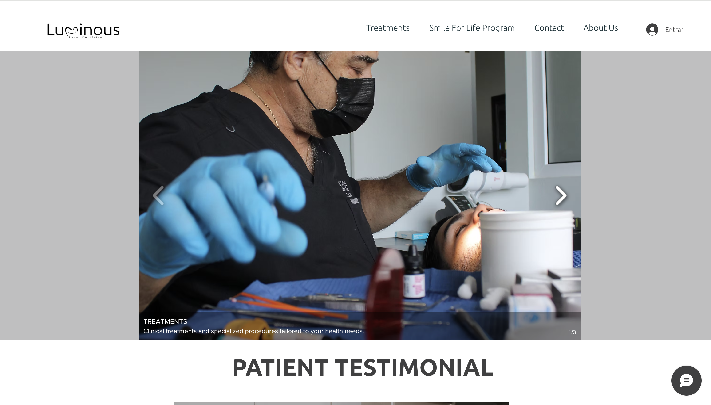

A clinic worth visiting, on a site that gave no reason to.
Luminous Laser Dentistry is a laser dentistry practice in Roatán, serving a mix of local and expat patients drawn to the island. The clinic's old site had no real landing page and no call to action — a visitor could land on it and leave with no clear next step, no sense of what made the clinic worth booking.
I redesigned and rebuilt the site solo in Wix Studio, the platform the clinic was already on. The new site opens with a clear value proposition aimed directly at its actual audience — pain-free, laser-based treatment, and a bilingual English-speaking team for Roatán's expat community — backed by a full sitemap covering treatments, the clinic's Smile For Life program, FAQs, and a location/contact page built for patients who don't already know the island.
At the center of the rebuild is a booking flow that routes appointment requests straight to the clinic's email — tested and working across both desktop and mobile.
Tools: Wix Studio · Figma
Before and after
The old site opened straight into a treatments carousel — no headline, no value proposition, no path to booking.
